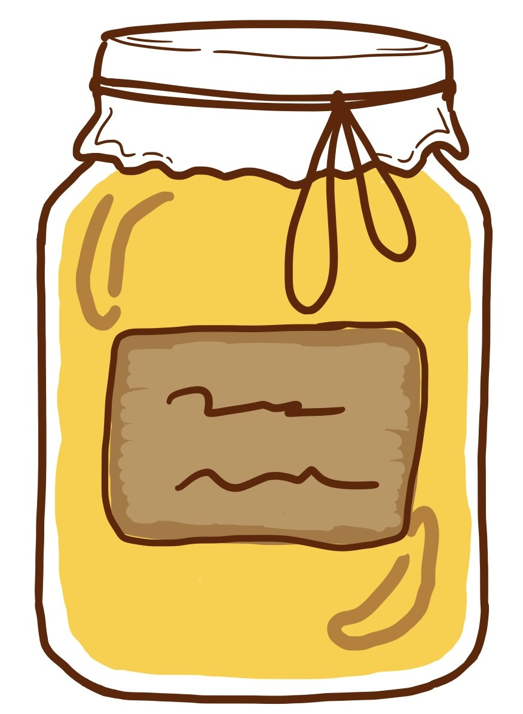

Charakteristika
Repkový med s kvetovým podielom je včelí med z obdobia jarnej znášky, primárne z nektáru repky olejnej doplnený o podiel nektáru z jarných ovocných stromov. Tento typ medu je známy svojou krémovou konzistenciou, jemnou chuťou a rýchlou kryštalizáciou, čo je prirodzený proces a znak kvality.
Nutričné výhody
- Vysoký obsah glukózy
- Prírodné enzýmy
- Minerálne látky (300g)
- Antioxidanty
- Antibakteriálne účinky
Krajina pôvodu
Slovenská Republika